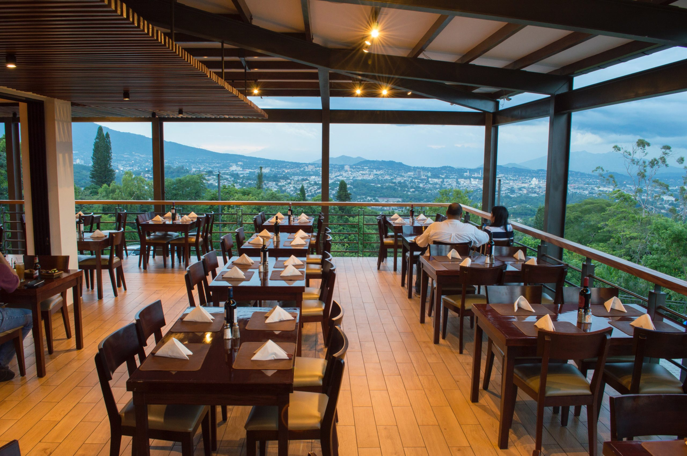

Panchimalco es un pequeño pueblo pintoresco ubicado en el departamento de San Salvador en El
Salvador. Este pueblo es conocido por su rica cultura y su patrimonio histórico, que ha sido
preservado durante siglos.
Uno de los aspectos más destacados de Panchimalco es su arquitectura colonial española, que
se puede ver en las hermosas iglesias y edificios históricos que todavía se encuentran en el
pueblo. La iglesia principal, por ejemplo, es una hermosa estructura de estilo colonial que
data del siglo XVIII.
Panchimalco también es conocido por su arte y artesanía. Los residentes locales son famosos
por sus habilidades en la elaboración de máscaras y textiles, y los turistas pueden ver
estas habilidades en acción en el pueblo. Los visitantes también pueden comprar algunos de
estos productos, incluyendo textiles, artesanías de madera y cerámica.
Otro punto de interés en Panchimalco es el Mercado de Artesanías, un lugar donde los
visitantes pueden comprar artesanías auténticas y otros productos locales. Los vendedores
locales también ofrecen una amplia variedad de alimentos y bebidas, incluyendo deliciosos
platillos típicos salvadoreños como las pupusas.
Para aquellos interesados en la historia, Panchimalco también tiene un museo arqueológico
que muestra artefactos precolombinos y otros objetos históricos relacionados con la cultura
indígena de la región.

Lugar mas reconocido de panchimalco.
Planes de Renderos.
El Mirador de los Planes de Renderos es uno de los destinos turísticos más populares de Panchimalco,
ubicado en la cima de una colina a unos 800 metros sobre el nivel del mar. Desde este lugar, podrás disfrutar
de impresionantes vistas panorámicas de la ciudad de San Salvador y sus alrededores, con sus montañas,
volcanes y exuberante vegetación.
Pero no solo eso, en el Mirador de los Planes de Renderos también podrás probar una de las comidas más típicas
y deliciosas de El Salvador: las pupusas. Estas son tortillas hechas a mano y rellenas de queso, frijoles,
chicharrón, loroco, entre otros ingredientes,
y se cocinan en una plancha caliente hasta que quedan doradas y crujientes por fuera y suaves y cremosas por dentro.
Además de disfrutar de la vista y la comida, el Mirador de los Planes de Renderos también es un lugar ideal para
relajarse y descansar. Hay áreas de picnic, caminos para hacer senderismo y espacios verdes para disfrutar
en familia o con amigos.